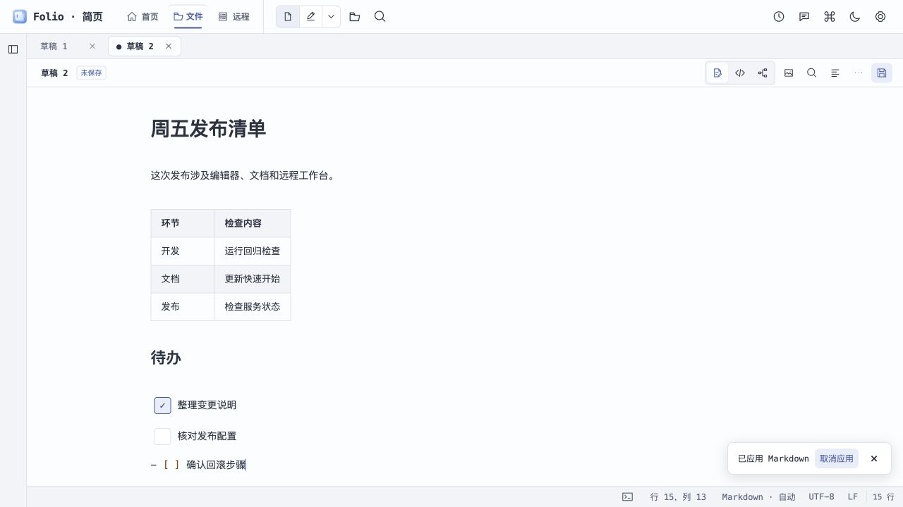

粘贴后识别格式
收到一段 JSON 或带注释的 YAML，点「新建草稿」贴进去。Folio 会自动识别并高亮，右下角可以切换格式。要整理缩进，再点「格式化」。

收到一段 JSON 或带注释的 YAML，点「新建草稿」贴进去。Folio 会自动识别并高亮，右下角可以切换格式。要整理缩进，再点「格式化」。
写完一段说明，想看表格和待办有没有排对。打开 Markdown 笔记，排版随文字更新，图片可直接调宽度，写完还能导出为 Word、网页或 PDF。
流程用文字说不清时，点绘图按钮打开 Excalidraw，或在 Markdown 里插入画布。保存后，图会显示在笔记里。截图也可以用「插入图片」放进正文。
开发机和测试机多了，地址容易记混。打开「远程」，按名称、地址或分组找主机，从同一行打开 SSH 或 SFTP。
测试机报错，得上去看看日志。点主机旁的「连接」打开 SSH 终端标签。每天都跑的命令可以存成脚本。
想把两台机器的日志拉回来对照？给每台机器各开一个 SFTP 标签，在服务器和本机目录之间上传或下载。
笔记和代码保存在你选的文件夹。断网时照样能写 Markdown、画图、读本地 PDF 和 EPUB。连服务器、传文件或使用在线 AI 服务时再联网。
通过 iCloud 等工具同步工作区，阅读笔记、主题和字体随文件夹一起带走。工作区里的 SSH 凭据和模型 API 密钥加密保存，到另一台电脑用原口令解锁。
v0.1.5 的 macOS、Windows 和 Linux DEB 下载大小。便携 AppImage 约 109 MB。
用系统 WebView 显示界面。公式和图表按需加载，关闭最后一个 Markdown 文档时释放排版上下文。
打开文件夹就能开始编辑。Folio 在后台建立文件索引。
v0.1.5